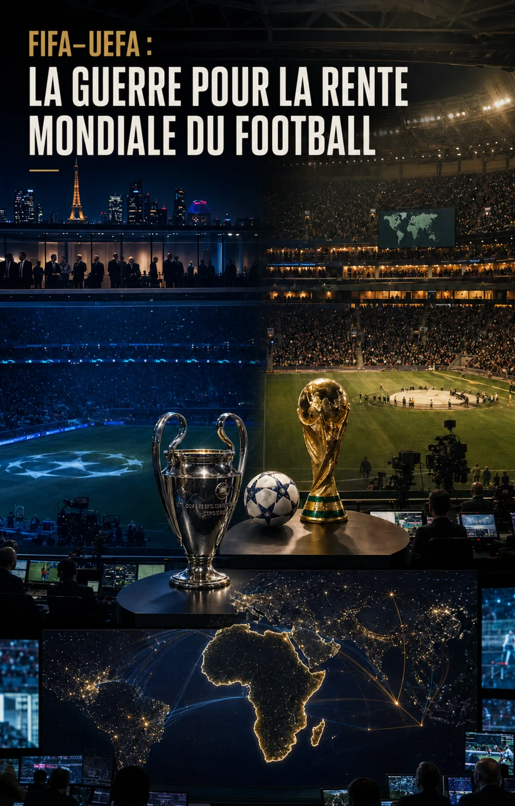

FIFA–UEFA : la guerre pour la rente mondiale du football
UEFA, UC3, Relevent Sports, FIFA, plateformes mondiales et intérêts africains : derrière le conflit moral, deux architectures concurrentes de mondialisation du football.

Le désaccord ne porte pas sur la présence de l'argent dans le football, mais sur l'organisation qui contrôlera les compétitions mondiales, les droits, les plateformes, le calendrier et la redistribution de la rente.
Avant-propos
Le conflit entre l'UEFA et la FIFA est généralement raconté comme une opposition entre, d'un côté, une institution européenne soucieuse de protéger le football et, de l'autre, Gianni Infantino, accusé de centraliser le pouvoir, de multiplier les compétitions et de rapprocher la FIFA des capitaux américains et des gouvernements du Golfe. Ce récit contient des éléments légitimes de critique, mais il demeure incomplet.
L'UEFA ne se tient pas à l'écart de la mondialisation commerciale qu'elle reproche à la FIFA. Avec UC3, entreprise commune constituée avec l'organisation des clubs européens, elle a intégré les grands clubs à la gestion des droits et confié leur commercialisation mondiale à Relevent Football Partners, société américaine contrôlée par l'écosystème du milliardaire Stephen M. Ross. Elle propose désormais des lots transnationaux destinés aux grandes plateformes numériques et recherche une valorisation mondiale de la Ligue des champions.
La FIFA suit une stratégie concurrente : nouvelle Coupe du monde des clubs, implantation américaine, accords globaux et redistribution vers les 211 associations. L'affrontement oppose donc moins le football à l'argent que deux centres de pouvoir cherchant à transformer une audience mondiale en droits médiatiques, influence institutionnelle et capacité de distribution.
Pour l'Afrique, l'enjeu n'est plus de choisir moralement entre Infantino et l'UEFA. La CAF évolue au milieu d'une compétition entre FIFA, UEFA, grands clubs, capitaux américains, puissances du Golfe, diffuseurs et plateformes. Sa responsabilité est d'identifier les convergences temporaires, de négocier des contreparties mesurables et de préserver sa capacité de déplacement entre les coalitions, tout en soumettant ses propres dirigeants à une gouvernance vérifiable.
Genèse — comment le football est devenu un champ de bataille géoéconomique
Pour comprendre le conflit actuel entre Gianni Infantino et l'UEFA, il faut remonter avant 2015. La querelle contemporaine n'est pas née d'une divergence soudaine sur la morale, le calendrier ou la proximité avec les gouvernements. Elle est l'aboutissement d'une guerre de positionnement engagée lorsque le football européen est devenu un actif mondial convoité par les capitaux américains et par les puissances du Golfe.
Le football européen n'a donc pas été conquis par une seule puissance. Il est devenu le terrain d'une compétition entre plusieurs écosystèmes de capitaux. Les investisseurs américains voient principalement les clubs comme des marques mondiales, des actifs commerciaux, des producteurs de contenus et des portes d'entrée vers les droits audiovisuels. Les puissances du Golfe les utilisent également comme instruments de visibilité, de diversification économique, de diplomatie et d'influence institutionnelle.
1. La première offensive américaine : acquérir les marques européennes
| Année | Pays européen | Club ou opération | Investisseur américain | Signification |
|---|---|---|---|---|
| 2005 | Angleterre | Manchester United | Famille Glazer | Contrôle d'une des plus grandes marques mondiales |
| 2006 | Angleterre | Aston Villa | Randy Lerner | Acquisition d'un club historique de Premier League |
| 2007–2011 | Angleterre | Arsenal | Stan Kroenke | Entrée progressive, puis prise de contrôle |
| 2010 | Angleterre | Liverpool | Fenway Sports Group | Valorisation sportive et commerciale mondialisée |
| 2012 | Angleterre / États-Unis | Introduction de Manchester United à New York | Famille Glazer | Connexion aux marchés financiers américains |
| 2018 | France | Girondins de Bordeaux | GACP puis King Street | Entrée du capital-investissement en Ligue 1 |
| 2018 | Italie | AC Milan | Elliott Management | Reprise d'un grand club par un fonds américain |
| 2020 | Italie | AS Roma | Friedkin Group | Construction d'un réseau international |
| 2020 | Italie | Parma | Famille Krause | Acquisition d'un club italien historique |
| 2021 | Italie | Genoa | 777 Partners | Déploiement d'un modèle multiclub |
| 2021 | France | Toulouse FC | RedBird Capital Partners | Plateforme sportive et commerciale |
| 2022 | France | Olympique lyonnais | Eagle Football / John Textor | Intégration à un réseau multiclub |
| 2022 | Italie | Atalanta | Groupe mené par Stephen Pagliuca | Participation dans un club performant |
| 2022 | Italie | AC Milan | RedBird Capital Partners | Contrôle par un autre fonds américain |
| 2024 | Italie | Inter Milan | Oaktree Capital Management | Prise de contrôle après défaut de remboursement |
| 2024 | Angleterre | Everton | Friedkin Group | Liaison capitalistique avec l'AS Roma |
| 2025 | Italie | Hellas Vérone | Presidio Investors | Extension aux clubs de valeur intermédiaire |
| 2025 | Italie | Monza | Beckett Layne Ventures | Poursuite de la pénétration du marché italien |
Avant 2015, cette offensive se concentre surtout sur les grandes marques anglaises. Après 2015, elle change d'échelle : elle s'étend à la France, à l'Italie, à la Belgique et au Portugal, puis aux réseaux multiclubs, au financement, aux plateformes et à la commercialisation internationale. En 2024, Football Benchmark recensait 27 clubs des cinq grands championnats sous contrôle nord-américain, dont neuf en Serie A.
Cette chronologie ne démontre pas l'existence d'un centre de commandement unique. Les Glazer, Fenway, RedBird, Oaktree, Relevent et les plateformes américaines suivent leurs logiques propres. Leur convergence produit néanmoins un résultat systémique : l'écosystème américain ne possède plus seulement des clubs ; il structure progressivement le marché dans lequel la FIFA, l'UEFA et ces clubs doivent évoluer.
2. L'offensive du Golfe : les clubs comme instruments de puissance
| Année | Pays du Golfe | Pays européen | Club ou opération | Investisseur | Signification |
|---|---|---|---|---|---|
| 2008 | Émirats arabes unis | Angleterre | Manchester City | Abu Dhabi United Group / Cheikh Mansour | Vitrine mondiale d'Abu Dhabi |
| 2010 | Qatar | Espagne | Málaga CF | Abdullah Al-Thani | Implantation qatarienne en Espagne |
| 2011 | Qatar | France | Paris Saint-Germain | Qatar Sports Investments | Rayonnement sportif, médiatique et diplomatique |
| 2013 | Arabie saoudite | Angleterre | Sheffield United | Prince Abdullah bin Mosaad | Implantation saoudienne durable |
| 2013 | Émirats arabes unis | Europe et monde | Création de City Football Group | Écosystème lié à Abu Dhabi | Passage du club unique au réseau mondial |
| 2017 | Émirats arabes unis | Espagne | Girona FC | City Football Group | Accès au marché et à la formation ibériques |
| 2020 | Bahreïn | France | Paris FC | Bahrain United Group | Positionnement dans le marché parisien |
| 2020 | Émirats arabes unis | Belgique | Lommel SK | City Football Group | Recrutement et développement de jeunes |
| 2020 | Émirats arabes unis | France | ESTAC Troyes | City Football Group | Implantation directe en France |
| 2021 | Arabie saoudite | Angleterre | Newcastle United | Consortium dirigé par le PIF | Entrée d'un fonds souverain en Premier League |
| 2021 | Arabie saoudite | France | LB Châteauroux | United World Group | Extension d'un réseau multiclub |
| 2022 | Qatar | Portugal | SC Braga, 21,67 % | Qatar Sports Investments | Diversification au-delà du PSG |
| 2022 | Émirats arabes unis | Italie | Palermo FC | City Football Group | Implantation sur le marché italien |
Tous les investissements du Golfe ne sont pas juridiquement étatiques : certains relèvent de sociétés privées, de familles régnantes ou de consortiums. Mais leur portée dépasse souvent la rentabilité du club. Manchester City devient le centre d'un réseau mondial ; le PSG s'articule avec QSI, beIN, Qatar Airways, la Coupe du monde 2022 et la présence de Nasser Al-Khelaïfi au cœur de la gouvernance européenne ; Newcastle s'inscrit dans l'offensive sportive et touristique saoudienne.
3. Deux offensives différentes, un même champ de bataille
| Dimension | Offensive américaine | Offensive du Golfe |
|---|---|---|
| Acteurs dominants | Milliardaires, fonds, groupes sportifs, banques et plateformes | Fonds souverains, sociétés d'investissement, familles régnantes et groupes médiatiques |
| Logique principale | Valorisation financière et commerciale | Rayonnement, diversification économique et influence |
| Clubs recherchés | Grandes marques et actifs européens sous-évalués | Clubs vitrines, marchés prestigieux et plateformes stratégiques |
| Méthode | Rachats, dette, private equity, Bourse, multipropriété | Capital massif, sponsoring, médias, tourisme et infrastructures |
| Extension | Droits, streaming, finance, marketing et multiclubs | Médias, compagnies aériennes, événements et gouvernance |
| Exemples centraux | Manchester United, Liverpool, Milan, Roma, Lyon | Manchester City, PSG, Newcastle, Braga |
Les deux modèles ne forment pas des camps hermétiques. Ils peuvent s'affronter sur un actif et coopérer sur un autre : Arctos Partners est entré au capital du PSG en 2023 ; l'UEFA travaille avec l'américain Relevent ; UC3 associe cette commercialisation américaine à une organisation de clubs présidée par Nasser Al-Khelaïfi. Les alliances traversent donc les frontières nationales.
4. 2010–2015 : de la défaite américaine à la rupture de l'ordre Blatter
Le 2 décembre 2010, les États-Unis perdent l'organisation du Mondial 2022 face au Qatar, tandis que l'Angleterre échoue dans la course au Mondial 2018 attribué à la Russie. L'ordre Blatter démontre alors qu'il peut résister aux préférences des puissances occidentales en s'appuyant sur l'égalité électorale entre les fédérations et sur une coalition politique comprenant l'Afrique, l'Asie, les Caraïbes et l'Amérique latine.
Le 27 mai 2015, à deux jours de l'élection présidentielle de la FIFA, la justice américaine déclenche à Zurich une opération visant plusieurs hauts responsables. Les poursuites reposent sur des infractions réelles et documentées : corruption, fraude, blanchiment et versements occultes en contrepartie de droits médiatiques et commerciaux. Leur portée dépasse pourtant très vite le pénal. Réélu le 29 mai, Blatter annonce son départ le 2 juin.
La compétence américaine s'appuie sur les virements en dollars, les banques, les sociétés de marketing, les réunions et les flux commerciaux liés au territoire américain. L'opération révèle qu'une institution suisse administrant un sport mondial peut être déstabilisée par la dépendance de son économie au système financier et commercial des États-Unis. Le droit américain devient ainsi un instrument de projection de puissance, sans qu'il soit nécessaire de prétendre que la corruption aurait été inventée.
5. Le calendrier d'un changement d'échelle
| Année | Événement | Portée géopolitique |
|---|---|---|
| 2010 | Les États-Unis perdent le Mondial 2022 face au Qatar | L'ordre Blatter résiste aux préférences occidentales |
| 2011 | Développement de l'enquête américaine autour de la CONCACAF | Entrée judiciaire américaine dans les réseaux du football |
| 2013 | Chuck Blazer coopère secrètement avec la justice | Accès interne aux mécanismes de la FIFA |
| 2015 | Arrestations à Zurich à deux jours de l'élection | Effondrement de la légitimité de l'ordre Blatter |
| 2016 | Gianni Infantino est élu président | Recomposition du centre institutionnel |
| 2018 | Le Mondial 2026 est attribué au trio nord-américain | Centralité croissante du marché américain |
| 2025 | Nouvelle Coupe du monde des clubs aux États-Unis | Laboratoire commercial de la FIFA |
| 2026 | Coupe du monde à 48 équipes en Amérique du Nord | Apogée événementielle nord-américaine |
| 2027–2033 | Relevent commercialise les compétitions UEFA | Présence américaine au cœur du système européen |
| 2031 | Mondial féminin prévu aux États-Unis | Prolongement de la centralité sportive américaine |
Le scandale de 2015 n'a donc créé ni l'arrivée américaine ni l'offensive du Golfe. Il intervient au milieu d'une compétition déjà engagée. Mais il fait passer le football d'une guerre d'acquisition des clubs à une guerre de contrôle de l'architecture mondiale : compétitions, droits, plateformes, calendriers, données et redistribution.
Avant 2015, les Américains possédaient déjà certains grands clubs. Après 2015, l'écosystème américain devient simultanément propriétaire, financeur, diffuseur, opérateur commercial, territoire d'accueil et arbitre judiciaire des flux du football. Dans le même temps, les puissances du Golfe consolident leurs clubs vitrines, leurs réseaux médiatiques, leur sponsoring et leur présence dans la gouvernance.
C'est dans cette recomposition que naît le conflit actuel entre Infantino et l'UEFA. La FIFA cherche à utiliser l'universalité de ses 211 associations, le marché américain et ses compétitions mondiales pour pénétrer la rente des clubs. L'UEFA, associée aux grands clubs dans UC3, mondialise à son tour son produit grâce à Relevent, aux plateformes et à l'intégration de capitaux du Golfe. La bataille n'oppose donc pas l'argent au football : elle oppose plusieurs coalitions pour savoir qui organisera la mondialisation du football.
1. Le conflit moral masque une guerre de position
Les critiques visant Gianni Infantino ne doivent pas être écartées. La concentration de la décision, la proximité avec des pouvoirs politiques, l'opacité de certains projets et la pression exercée sur le calendrier méritent un contrôle rigoureux. Mais ces questions ne deviennent intelligibles qu'en les replaçant dans la concurrence qui oppose la FIFA à l'UEFA pour la maîtrise du football mondial de clubs.
Pendant plusieurs décennies, la Ligue des champions a occupé une position quasi monopolistique parmi les compétitions annuelles de clubs à portée mondiale. Sa puissance repose sur la concentration des meilleurs joueurs, des clubs les plus riches, des diffuseurs les plus solvables et des sponsors internationaux. La nouvelle Coupe du monde des clubs introduit une propriété rivale : une compétition mondiale directement détenue par la FIFA, ouverte aux autres continents et susceptible d'attirer les mêmes plateformes et les mêmes annonceurs.
Dans cette configuration, chaque discours institutionnel remplit deux fonctions. Il exprime une préoccupation réelle — calendrier, santé des joueurs, gouvernance, équilibre des compétitions — et protège simultanément une position économique. La dimension éthique du débat n'annule pas la lutte pour la rente ; elle en constitue aussi le langage public.
2. Deux architectures concurrentes de mondialisation
| Dimension | Architecture UEFA–UC3 | Architecture FIFA |
|---|---|---|
| Actif central | Ligue des champions et compétitions européennes | Coupe du monde, Mondial des clubs et marque FIFA |
| Base de pouvoir | Marché européen, clubs dominants, diffuseurs premium | 211 fédérations, compétitions mondiales, majorité électorale |
| Expansion | Plateformes mondiales, lots multinationaux, marché américain | Tournois élargis, contrats globaux, implantation américaine |
| Partenaires | Clubs européens, Relevent, sponsors et plateformes | Associations, confédérations, diffuseurs et gouvernements hôtes |
| Risque stratégique | Perdre la centralité du football mondial de clubs | Dépendre des grands clubs et de marchés concentrés |
| Promesse publique | Stabilité, excellence, solidarité européenne | Universalité, développement et redistribution mondiale |
Ce tableau montre que les deux systèmes utilisent des instruments comparables : concentration de droits, innovation de formats, partenariats privés, recherche de plateformes mondiales et diplomatie économique. Leur différence principale tient à la localisation du pouvoir et à la destination de la redistribution.
3. UC3 : l'UEFA cogère désormais la rente avec les clubs
UC3 réunit l'UEFA et l'organisation des clubs européens au sein d'une structure commune chargée des droits audiovisuels, du sponsoring, des licences et de la stratégie commerciale. Cette évolution réduit la distance entre le régulateur et les principaux bénéficiaires économiques de ses compétitions. Les clubs ne se contentent plus de recevoir une part des revenus : ils participent à la conception du système qui les produit.
L'UEFA indique que le nouveau format de ses compétitions masculines a porté leurs revenus à un record de 4,414 milliards d'euros en 2024-2025, soit 690 millions de plus que la saison précédente. La hausse du nombre de rencontres, la valeur accrue des lots et l'intégration commerciale des clubs consolident ainsi le produit européen au moment même où la FIFA tente d'installer un produit mondial concurrent.
Source : Rapport annuel UEFA 2024-2025
4. Relevent Sports : le bras américain de l'expansion européenne
En mars 2025, UC3 a confié à Relevent Football Partners un mandat mondial de six saisons, de 2027-2028 à 2032-2033, pour commercialiser les droits des compétitions masculines de clubs de l'UEFA. Le mandat couvre les médias, le sponsoring, les licences, la vente et les services associés. Relevent doit bâtir une structure spécialisée exclusivement consacrée à ces compétitions.
Relevent n'est pourtant pas un opérateur extérieur aux conflits de gouvernance du football. Contrôlée par Stephen M. Ross, elle a engagé une bataille antitrust contre la FIFA et la Fédération américaine afin de contester l'interdiction d'organiser aux États-Unis des matchs officiels de championnats étrangers. Le litige a poussé la FIFA à envisager une évolution de ses règles et s'est achevé par des accords dont les conditions n'ont pas été rendues publiques.
Le paradoxe est central : l'acteur qui a combattu les frontières territoriales défendues par la FIFA devient l'infrastructure commerciale de la mondialisation de l'UEFA. L'ouverture du marché américain n'est donc pas seulement un projet d'Infantino ; elle constitue également un objectif stratégique du système européen.
Sources : Annonce UEFA–UC3–Relevent, 14 mars 2025 · Reuters — règlement du litige FIFA–Relevent
5. Stephen Ross : un capitalisme d'accès plus qu'un camp idéologique
Stephen Ross a entretenu des relations avec des responsables des deux grands partis américains. Son soutien à des candidats républicains, sa levée de fonds de 2019 pour Donald Trump et ses contributions à différents réseaux démocrates décrivent moins une fidélité doctrinale qu'une stratégie d'accès au pouvoir. Un tel positionnement permet à un investisseur de défendre ses intérêts dans un environnement où alternent les administrations.
Cette lecture est renforcée par le comportement de l'administration Biden. En 2024, le gouvernement américain a soutenu devant la Cour suprême la poursuite de l'action antitrust de Relevent contre les restrictions de la FIFA et de la Fédération américaine. Le projet de Relevent bénéficiait donc d'un appui institutionnel dépassant le clivage Trump–Biden.
L'alliance visible entre Infantino et Trump ne doit donc pas dissimuler l'autre voie américaine : plus commerciale, moins spectaculaire et insérée dans les structures de l'UEFA. L'un mobilise la présidence et l'accueil des grands événements ; l'autre fournit l'accès au marché, aux plateformes et à la commercialisation mondiale.
Source : Associated Press — position de l'administration Biden
6. Le « first pick » mondial : la Ligue des champions devient un produit de plateforme
L'appel d'offres lancé en octobre 2025 pour le cycle 2027-2031 a introduit une vente simultanée dans les cinq principaux marchés européens — Allemagne, Espagne, France, Italie et Royaume-Uni — ainsi qu'un lot mondial permettant à un opérateur de sélectionner le meilleur match de chaque journée de Ligue des champions. Les plateformes visées incluent Amazon Prime Video, Apple TV+, Netflix et YouTube.
Cette évolution marque une rupture. La Ligue des champions n'est plus seulement une compétition européenne distribuée pays par pays ; elle est conçue comme un actif médiatique mondial, proposé sur plusieurs territoires et susceptible d'être associé à une plateforme globale. L'UEFA adopte ainsi les méthodes attribuées à la « privatisation » du projet FIFA : lots premium, exclusivité, contrats longs, intermédiaires privés et expansion transnationale.
Source : Reuters — appel d'offres UEFA 2027-2031
7. PSG, Qatar et intégration au cœur du système UEFA
La place de Nasser Al-Khelaïfi éclaire l'évolution du rapport entre l'UEFA et les capitaux du Golfe. Président du PSG et de Qatar Sports Investments, dirigeant de beIN Media Group et président de l'organisation des clubs européens associée à l'UEFA dans UC3, il intervient à plusieurs niveaux de la chaîne de valeur : propriété sportive, représentation des clubs, diffusion et gouvernance commerciale.
| Niveau | Position ou actif lié au Qatar | Portée stratégique |
|---|---|---|
| Club | Paris Saint-Germain / QSI | Vitrine sportive et marque mondiale |
| Gouvernance | Présidence de l'organisation européenne des clubs | Participation aux compromis institutionnels avec l'UEFA |
| Commercialisation | Organisation des clubs partenaire d'UC3 | Cogestion de la valeur des compétitions |
| Médias | beIN Media Group | Acquisition et distribution de droits sportifs |
| Sponsoring | Partenariats de marques qatariennes | Financement et visibilité internationale |
Cette accumulation ne démontre pas que le Qatar contrôlerait seul l'UEFA. Elle établit qu'il n'est plus un capital étranger situé à la périphérie du football européen. Il a été intégré à son architecture. L'UEFA ne rejette donc pas les capitaux du Golfe en tant que tels ; elle coopère avec ceux qui consolident son marché et son compromis avec les grands clubs.
8. La Coupe du monde des clubs : la contre-offensive de la FIFA
La FIFA a doté l'édition 2025 de la Coupe du monde des clubs d'un milliard de dollars pour les 32 participants, avec un objectif supplémentaire de 250 millions de dollars destiné à la solidarité mondiale. Selon la FIFA, l'intégralité des revenus du tournoi devait être redistribuée au football de clubs sans mobiliser ses réserves.
Au-delà des montants, le tournoi crée une compétition mondiale que la FIFA possède directement. Il offre aux clubs africains, asiatiques, nord-américains, océaniens et sud-américains une scène et des revenus qu'ils ne peuvent obtenir dans l'écosystème fermé des compétitions européennes. Sa capacité à devenir un rendez-vous premium menace la position de la Ligue des champions comme unique sommet commercial récurrent du football de clubs.
Source : FIFA — dotations et solidarité du Mondial des clubs 2025
9. La bataille économique en chiffres
| Indicateur | UEFA / UC3 | FIFA |
|---|---|---|
| Revenus ou enveloppe phare | 4,414 Md€ de revenus des compétitions de clubs en 2024-2025 | 1 Md$ de dotations au Mondial des clubs 2025 |
| Progression / solidarité | +690 M€ sur une saison ; solidarité européenne accrue | Objectif de 250 M$ de solidarité mondiale |
| Horizon commercial | Mandat Relevent : 2027-2028 à 2032-2033 | Cycle FIFA 2023-2026 annoncé à 13 Md$ de revenus |
| Produit disputé | Compétitions européennes commercialisées mondialement | Compétition mondiale de clubs contrôlée par la FIFA |
| Logique de distribution | Clubs engagés et système européen | Clubs participants, solidarité mondiale et associations |
La nouvelle compétition de la FIFA est désormais assez capitalisée pour entrer sur le marché premium jusque-là dominé par l'Europe.
10. Pourquoi le soutien africain à Infantino n'est pas réductible à une « aliénation »
La CAF et de nombreuses fédérations africaines peuvent être critiquées sur leur gouvernance. Mais leur demander de condamner mécaniquement Infantino au nom d'un récit moral européen revient à nier la structure réelle du conflit. Elles ne font pas face à un acteur unique, mais à plusieurs blocs dont chacun recherche leur vote, leur marché, leurs joueurs, leur légitimité et leur audience.
- La Coupe du monde 2026 réserve neuf places directes à l'Afrique, contre cinq lors de l'édition 2022, avec une possibilité supplémentaire par le tournoi de barrage intercontinental.
- FIFA Forward 3.0 prévoit jusqu'à 8 millions de dollars par association pour le cycle 2023-2026, soit sept fois l'enveloppe disponible au lancement du programme en 2016.
- Les deux premiers cycles de FIFA Forward ont rendu disponibles environ 2,8 milliards de dollars pour les 211 associations et les structures régionales ; près de 80 % ont été dirigés vers les associations membres.
- La Coupe du monde des clubs ouvre aux clubs africains des revenus, une exposition et des oppositions de haut niveau impossibles à obtenir par la seule économie continentale actuelle.
Sources : FIFA — répartition des places pour 2026 · FIFA — présentation de Forward 3.0
Ces bénéfices ne dispensent ni d'audit ni d'évaluation. Ils expliquent cependant pourquoi la CAF ne peut adopter une posture manichéenne. Soutenir une réforme de la FIFA qui augmente les places africaines n'oblige pas à approuver toutes les pratiques d'Infantino ; dialoguer avec l'UEFA n'impose pas d'ignorer que celle-ci protège la centralité économique de ses clubs ; accepter des capitaux américains ou du Golfe n'interdit pas d'en négocier les conditions. La doctrine pertinente est celle de l'autonomie transactionnelle : coopération variable, objectifs publics, contreparties mesurables et possibilité permanente de réviser les alliances.
11. Le cadrage médiatique : des faits exacts peuvent produire un récit incomplet
Le rôle des médias et des journalistes indépendants ne doit pas être analysé à partir d'accusations de collusion non démontrées. Aucun élément public suffisant ne permet d'affirmer que les Romain Molina ou Anthony Pla recevraient des instructions ou une rémunération de l'UEFA pour distraire l'opinion mondiale et africaine des enjeux cités plus haut. Par contre, la question pertinente serait de questionner l'indépendance du cadrage : les différents centres de pouvoir sont-ils soumis au même niveau d'examen ?
Un récit peut être composé de faits exacts et demeurer politiquement asymétrique. Il suffit que les intérêts d'Infantino soient constamment personnalisés et documentés, tandis que ceux d'UC3, de Relevent, de Stephen Ross, des grands clubs et du Qatar restent hors champ. L'UEFA bénéficie alors de la position implicite du contre-pouvoir, sans que sa propre stratégie de mondialisation soit exposée avec la même intensité.
| Critère | Question de contrôle |
|---|---|
| Sélection | Quels acteurs, contrats et scandales sont retenus ou laissés hors champ ? |
| Symétrie | Les réseaux de la FIFA et ceux de l'UEFA font-ils l'objet du même examen ? |
| Vocabulaire | Les dirigeants africains sont-ils décrits comme acteurs stratégiques ou comme simples obligés ? |
| Temporalité | Les accusations réfutées ou abandonnées sont-elles corrigées avec la même visibilité ? |
| Effet politique | Le récit éclaire-t-il les options africaines ou rend-il toute convergence suspecte ? |
Cette méthode critique évite le procès d'intention. Elle évalue des productions publiques, leurs choix, leurs omissions et leurs conséquences. Elle permet aussi d'admettre qu'une enquête puisse être factuellement utile tout en restant enfermée dans une grille européenne du problème.
12. La France et sa convergence structurelle médiatique
L'espace médiatique français se situe dans un environnement où plusieurs intérêts convergent : centralité éditoriale du PSG, présence de beIN dans l'audiovisuel sportif, dépendance des diffuseurs aux compétitions européennes, proximité culturelle avec la Ligue des champions et rôle institutionnel de Nasser Al-Khelaïfi. Cette structure rend spontanément plus visible la défense de l'ordre européen que les intérêts des autres continents.
Cela ne suffit pas à prouver une campagne organisée par le Qatar, le PSG ou l'UEFA, mais le biais peut fonctionner sans instruction centralisée : accès privilégié à certaines sources, dépendance aux droits, hiérarchie des sujets, familiarité avec les institutions européennes et absence de lecture africaine ou asiatique. La convergence systémique est démontrable ; la coordination intentionnelle exigerait des preuves supplémentaires.
13. L'effet continental : affaiblir la CAF au nom de sa libération
La répétition du récit d'une CAF entièrement soumise à la FIFA peut produire une conséquence inverse de celle annoncée. Elle impose au continent un faux choix entre l'alignement sur Infantino et l'alignement sur ses adversaires européens, alors que la géostratégie exige précisément de conserver plusieurs canaux ouverts et de faire monter le prix de son soutien.
- Toute convergence avec la FIFA est assimilée à une dépendance personnelle.
- Les divergences stratégiques deviennent des accusations morales de corruption ou de servilité.
- Les responsables africains perdent leur présomption de rationalité politique, reconnue aux acteurs européens.
- La CAF apparaît incapable de porter un intérêt continental, ce qui facilite les négociations bilatérales et la division.
L'UEFA peut défendre en bloc son calendrier, ses revenus et ses compétitions parce que l'existence d'intérêts européens communs est admise. Les États-Unis peuvent mobiliser simultanément leur justice, leurs fonds, leurs plateformes et leur marché sans que chaque acteur soit réduit à un simple obligé. Le Qatar, Abu Dhabi et Riyad peuvent articuler clubs, médias, compagnies aériennes et diplomatie. L'Afrique, au contraire, est souvent sommée d'exposer ses divisions et de moraliser chacune de ses alliances. Cette asymétrie affaiblit la CAF au nom de sa libération.
14. Les limites du système Infantino
Une lecture stratégique ne doit pas devenir une défense inconditionnelle. L'augmentation des ressources et de la représentation ne résout pas automatiquement les problèmes du football africain. Les fonds peuvent être mal utilisés ; les fédérations peuvent manquer de transparence ; les calendriers peuvent surcharger les joueurs ; la centralisation de la FIFA peut réduire les contre-pouvoirs ; les alliances politiques d'Infantino peuvent exposer l'institution à des intérêts extérieurs.
Le contrôle doit donc être symétrique. La FIFA doit publier les mécanismes financiers, les critères d'attribution, les contrats structurants et les dispositifs d'évaluation. La CAF et les fédérations doivent rendre compte des projets financés, des résultats et des bénéficiaires. L'UEFA, UC3 et les clubs doivent être soumis aux mêmes exigences concernant leurs accords commerciaux, leurs conflits d'intérêts et les effets de leurs stratégies sur le reste du monde.
15. Samuel Eto'o : un cas de délégitimation à traiter sans immunité
C'est ici que l'injonction populiste adressée à Samuel Eto'o devient problématique. Anthony Pla, Romain Molina ou d'autres journalistes sont légitimes à enquêter, interroger et exiger des comptes. Ils ne peuvent toutefois exiger qu'un dirigeant africain transforme publiquement chaque arbitrage stratégique en déclaration de guerre contre Infantino. Dans un espace où s'affrontent la FIFA, l'UEFA, les gouvernements, les fonds, les diffuseurs et les grands clubs, l'exposition prématurée d'une position peut réduire la marge de négociation de la FECAFOOT, de la CAF et, au-delà, du continent.
« Avancer masqué » ne doit pas être compris comme mentir au public ou dissimuler des fautes. Il s'agit de discrétion stratégique : ne pas révéler toutes ses alliances, ses lignes rouges, ses compromis provisoires ou son calendrier avant d'avoir obtenu les garanties recherchées. Les puissances européennes, américaines et du Golfe pratiquent cette retenue sans que leur rationalité politique soit niée. L'exiger des dirigeants africains tout en leur demandant une transparence immédiate sur chaque mouvement crée une asymétrie dangereuse.
L'évaluation rigoureuse devrait comparer la couverture de ses fautes à celle de ses résultats, distinguer faits établis et insinuations, suivre le devenir des accusations, prendre en compte les droits de réponse et appliquer les mêmes critères à d'autres responsables. Sans corpus complet, l'existence d'un acharnement coordonné ne peut être posée comme un fait. Mais la fabrication répétée de la figure du « vendu » mérite d'être étudiée comme technique de délégitimation politique.
16. Pour une doctrine africaine autonome
L'Afrique ne doit devenir ni le camp personnel d'Infantino, ni la réserve électorale de l'UEFA, ni un débouché passif pour les capitaux américains ou du Golfe. Elle doit se comporter comme un centre de puissance en construction : cartographier les acteurs, exploiter leurs rivalités, négocier bloc par bloc et convertir chaque soutien en représentation, financement, transfert de compétences, infrastructures et accès aux marchés.
| Axe | Position africaine proposée |
|---|---|
| Représentation | Soutenir les formats qui augmentent durablement les places africaines. |
| Redistribution | Négocier des enveloppes prévisibles pour les clubs, ligues, jeunes et football féminin. |
| Transparence | Publier les fonds reçus, projets, marchés, audits, résultats et sanctions. |
| Calendrier | Défendre collectivement la santé des joueurs et la valeur des compétitions africaines. |
| Actifs propres | Développer droits médias, données, plateformes, infrastructures et marques continentales. |
| Diplomatie | Voter en bloc sur des objectifs publics, avec possibilité de révision selon les résultats. |
| Pluralité | Coopérer avec FIFA, UEFA et autres confédérations sans dépendance exclusive. |
Cette autonomie suppose une production intellectuelle africaine capable de cartographier les intérêts avant de reprendre les catégories médiatiques européennes. Elle suppose aussi une diplomatie à deux niveaux : une doctrine publique définissant les objectifs et les exigences de transparence ; une tactique de négociation suffisamment discrète pour ne pas livrer à l'avance toutes les marges de manœuvre. La question n'est plus seulement : « Qui est vertueux ? » Elle devient : « Quelle coalition augmente aujourd'hui la représentation, les ressources, la gouvernance et la souveraineté sportive du continent, et à quelles conditions pouvons-nous la quitter demain ? »
Conclusion — Qui contrôlera la mondialisation du football ?
Le conflit UEFA–FIFA ne met pas aux prises une Europe étrangère à l'argent et une FIFA soudainement livrée au capital. Il oppose deux architectures concurrentes. L'UEFA, associée aux grands clubs dans UC3, s'appuie sur Relevent et sur les plateformes mondiales pour préserver la centralité commerciale de la Ligue des champions. La FIFA utilise ses compétitions, son réseau de 211 associations, le marché américain et ses alliances politiques pour élargir son contrôle sur le football mondial de clubs.
Relevent constitue la pièce révélatrice du dispositif : société américaine ayant combattu les restrictions territoriales de la FIFA, elle devient ensuite le partenaire commercial global de l'UEFA. Le Qatar, à travers le PSG, beIN, QSI et la gouvernance des clubs européens, n'est plus extérieur à ce système ; il en est devenu l'un des acteurs intégrés. Le récit d'une UEFA protégeant le football contre les capitaux américains ou du Golfe ne résiste donc pas à l'examen de ses propres alliances.
La critique d'Infantino demeure nécessaire, mais elle perd sa crédibilité lorsqu'elle ne cartographie pas le pouvoir concurrent. De même, présenter le soutien africain comme une simple aliénation efface les gains de représentation, les financements et l'intérêt du continent à contester le monopole économique européen. Cette réduction pousse des dirigeants comme Samuel Eto'o à choisir entre l'obéissance médiatique et la caricature du « vendu », alors que leur environnement exige de négocier avec plusieurs puissances, parfois sans exposer immédiatement toutes leurs cartes.
L'Afrique doit donc refuser les fidélités automatiques comme les indignations importées. Elle peut soutenir les décisions de la FIFA qui augmentent sa représentation, contester celles qui l'affaiblissent, négocier avec l'UEFA, les États-Unis et les puissances du Golfe, garder une part de discrétion tactique et exiger ensuite des comptes précis à ses propres dirigeants. C'est à cette condition que son poids électoral et son immense vivier sportif pourront devenir une puissance géoéconomique réelle.
SOURCES PRINCIPALES
- Département américain de la Justice, acte d'accusation FIFA, 27 mai 2015
- FIFA, attribution des Coupes du monde 2018 et 2022, 2 décembre 2010
- Football Benchmark, propriété nord-américaine des clubs européens, 2024
- City Football Group, portefeuille mondial de clubs
- Qatar Sports Investments, investissement dans le SC Braga, 2022
- Public Investment Fund, acquisition de Newcastle United, 2021
- UEFA, Rapport annuel 2024-2025
- UEFA, « UC3 appoints Relevent… », 14 mars 2025
- Reuters, appel d'offres UEFA 2027-2031, 13 octobre 2025
- Reuters, règlement FIFA–Relevent, 8 avril 2024
- Reuters, règlement US Soccer–Relevent, 9 avril 2025
- Associated Press, administration Biden et action Relevent
- FIFA, dotations et solidarité du Mondial des clubs 2025
- FIFA, rapport FIFA Forward
- FIFA, programme Forward 3.0
- FIFA, répartition des places pour la Coupe du monde 2026